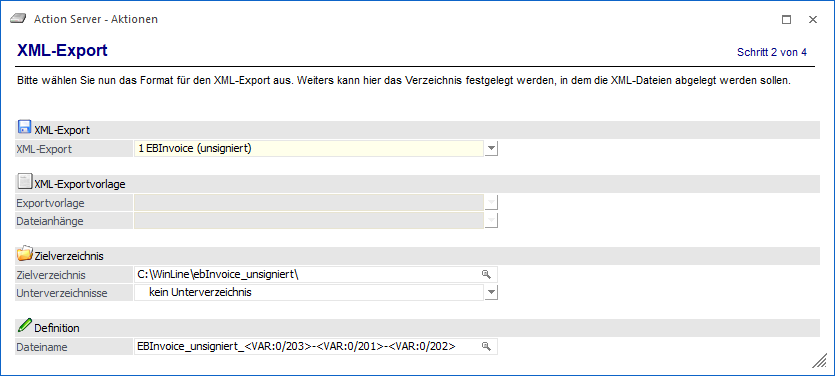

In diesem Fenster kann festgelegt werden welche Belege als XML-Dateien in welches Verzeichnis exportiert werden sollen bzw. welche Exportvorlagen dazu verwendet werden sollen.
Ø XML-Export
An dieser Stelle wird definiert, für welchen Bereich der Export stattfinden soll.
ü 0 - EBInvoice (signiert)
Diese
Einstellung steht ab Version 8.4 Build 1110 nicht mehr im Action Server zur
Verfügung. Hierzu muss der Menüpunkt "E-Billing / Export" verwendet werden.
ü 1 - EBInvoice (unsigniert)
Mit
dieser Einstellung werden Belege im EBInterface-Format exportiert, wobei hierbei
auch eine Zahlungsreferenz erzeugt wird. Zusätzlich werden hierzu ggfs. der
EBPP-Anmeldename sowie die Layout.ID von EBPP benötigt.
ü 2 bis 6 - XML-Exportvorlage
Bei
Verwendung der Option "XML-Exportvorlage" werden die Belege (je nach Typ des
XML-Exports können dies alle Belegstufen oder nur bestimmte Belegstufen sein)
unter Verwendung der, aus der Auswahlbox gewählten, Exportvorlage
exportiert.
Hinweis
Die Exportvariante "3 - XML-Exportvorlage (alle Belegstufen)" steht nur für Belege zur Verfügung, die mit einer WinLine Version kleiner 11.12 erstellt wurden. Ab WinLine Version 11.12 kann in neuen Belegen dieses Kennzeichen nicht mehr gesetzt werden.
ü 7 - EBInvoice (E-Rechnung an den
Bund)
Mit dieser Einstellung werden Belege im, für E-Rechnungen an den Bund,
"angepassten" EBInterface-Format erzeugt und im angegebenen Verzeichnis
abgelegt.
ü 8 - EBInvoice (E-Rechnung an
BBG)
Mit dieser Einstellung werden Belege im, für E-Rechnungen an die
Bundesbeschaffung GmbH, "angepassten" EBInterface-Format erzeugt und im
angegebenen Verzeichnis abgelegt.
ü 10 - XRechnung
Mit dieser
Einstellung werden Belege für den Rechnungsversand bei öffentlichen
Auftraggebern in Deutschland im angegebenen Verzeichnis abgelegt.
ü 11 - ZUGFeRD/Factur-X
Belege
für den Rechnungsaustausch zwischen Unternehmen, der öffentlichen Verwaltung und
Verbrauchern, welche im angegebenen Verzeichnis abgelegt werden.
Ø Exportvorlage
Aus der Auswahlbox kann jene Exportvorlage angegeben werden, die für den Export verwendet werden soll.
Des Weiteren steht die Auswahl "*** Exportvorlage lt. Beleg ***" zur Verfügung. Hiermit wird für den Export jene Exportvorlage verwendet, die im Beleg verspeichert ist.
In der Auswahllistbox werden keine Exportvorlagen vorgeschlagen, welche das Exportkennzeichen "10 - Signatur hier einfügen" zugeordnet haben (diese stehen nur im E-Billing/Export zur Verfügung).
Anders als im Menüpunkt "E-Billing/Export" können jedoch die hier zu verwendenden XML-Exportvorlagen auch die Exportkennzeichen "11 - Dateianhang hier einfügen" und "12 - Dateianhang" zugewiesen haben. Dadurch werden in den XML-Dateien auch die so genannten Dateianhänge eingefügt.
Ø Dateianhänge
Um für Dateianhänge (jene Dokumente, welche im Belegerfassen mittels Drag & Drop in den Belegkopf gezogen wurden und als Archivschlagwort "055 XML-Export" inkl. einem Wert hinterlegt haben) eine eigene XML-Datei zu erzeugen kann aus der Auswahlbox eine XML-Exportvorlage gewählt werden. Diese Exportvorlage muss die Exportkennzeichen "11 - Dateianhang hier einfügen" und "12 - Dateianhang" zugewiesen haben.
Hinweis
Für alle dieser angeführten Optionen muss pro Beleg die entsprechende "E-Billing"-Option festgelegt sein.
D.h. es werden z.B. nur Belege exportiert, welche auch die Option "e-Billing = 2 - EBInvoice (unsigniert)" hinterlegt haben.
Ø Zielverzeichnis
Als Zielverzeichnis kann jenes angegeben werden, in welches die entsprechenden Belege exportiert werden sollen.
Ø Unterverzeichnisse
Zusätzlich zum Ausgabezielverzeichnis kann ein weiteres "Unterverzeichnis" zur Ablage verwendet werden. Hierbei stehen folgende Varianten zur Verfügung:
ü K - Kontonummer
Für jede
vorhandene Personenkontonummer wird ein Unterverzeichnis mit der Kontonummer als
Verzeichnisnamen erzeugt / verwende.
ü Zx - Zusatzfeld ""xxx""
Es wird
ein Unterverzeichnis mit dem Inhalt des angegebenen Zusatzfeldes (pro
Personenkonto) erzeugt / verwendet. Ist der Inhalt des hier angegebenen
Zusatzfeldes leer, so wird die Personenkontonummer als Verzeichnisname
verwendet.
Ø Dateiname
In diesem Feld kann der Dateiname aus Texten bzw. Variablen dynamisch zusammengesetzt werden. Zur Suche bzw. Auswahl der Variablen steht der Matchcode zur Verfügung. Zu beachten ist hierbei, dass der Matchcode in diesem Fall den zuvor enthaltenen Wert des Feldes nicht ersetzt, sondern die neue Variable hinzufügt. Dieses Feld zur Definition des Dateinamens ist für den Beleg-Typ "13 - E-Rechnung an BBG" nicht anwählbar.
Hinweis
Kommt es durch die Hinterlegung im Zuge des Erstellens der Datei zu Dateinamen, welche nicht eindeutig sind, so wird an einen bereits bestehenden Dateinamen ein "Zähler" angehängt.
Nach der Definition der Aktionsdetails erfolgt im nächsten Schritt die Angabe zu "Benutzer und Mandant".